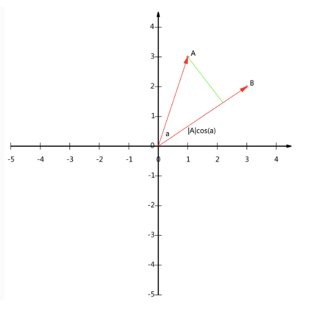
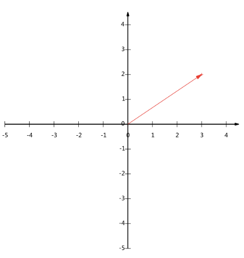
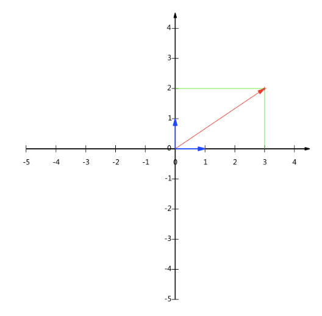
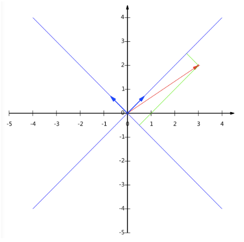
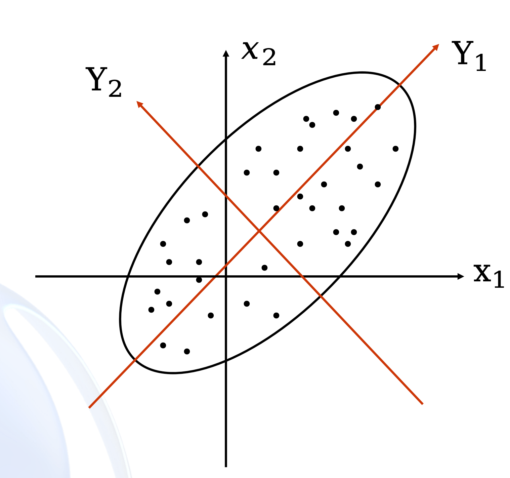
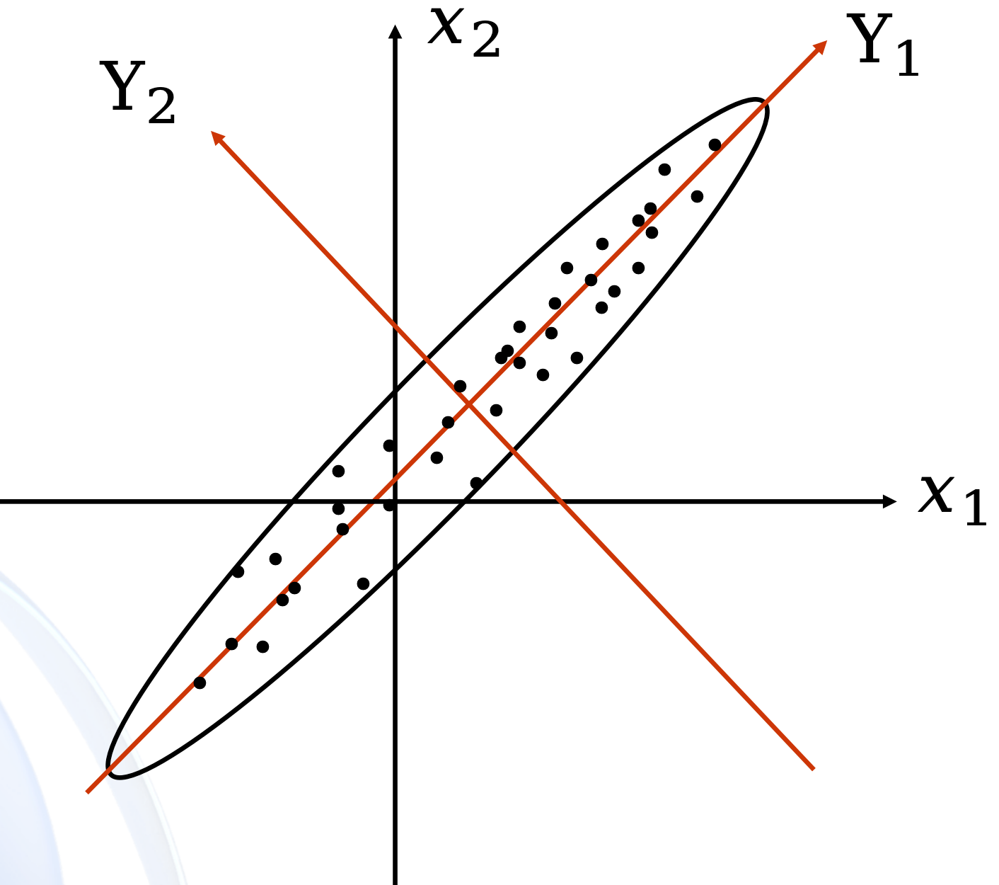
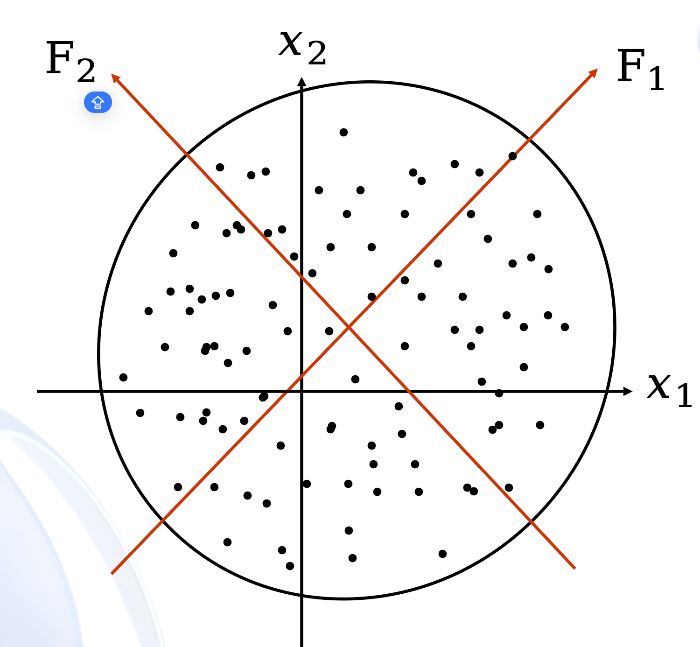
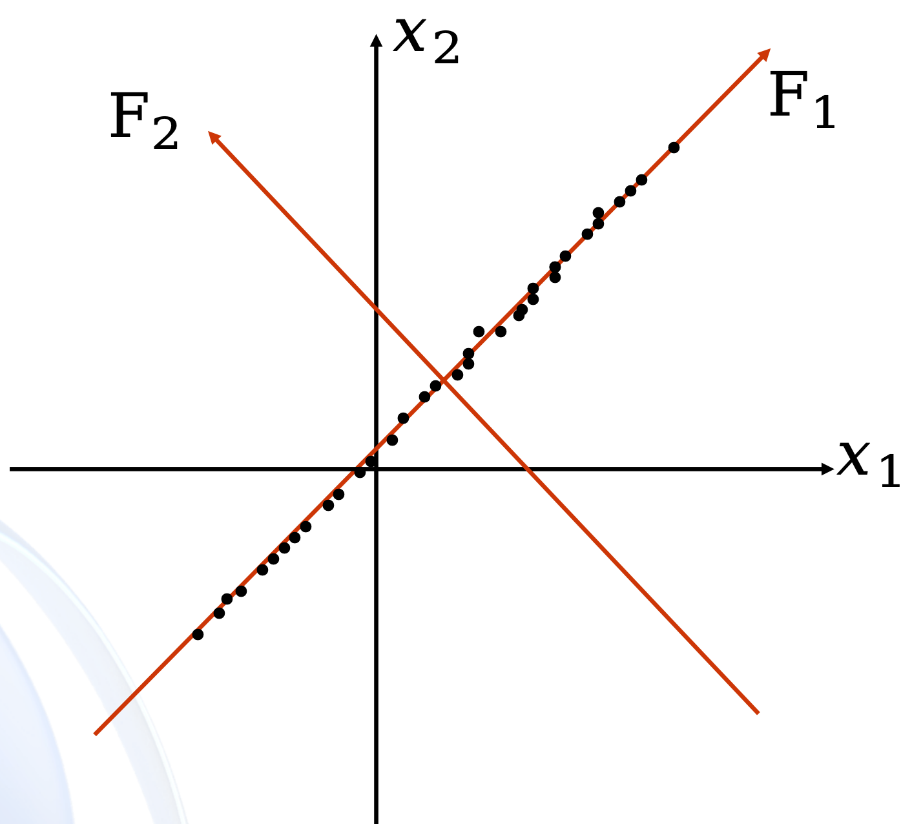

变量太多？先别慌，给多维数据做一次高效“瘦身”
设想我们正在做一个 AI 产品用户行为特征提炼 项目。某平台记录了用户：
这些变量这么多，很多还彼此高度相关（比如“使用频率”和“多轮追问”），直接分析根本无从下手。
能不能只用 2 到 3 个“超级综合指标”，就把这些用户的使用模式概括出来？
面对动辄几十上百维的数据矩阵，我们面临几个典型困境：
信息太多时，难点不在“有没有”，而在“怎么提炼”。
一句话：用少数新变量，代替多数旧变量。
主成分分析 (PCA) 由 Hotelling 于 1933 年首次提出，是多元统计降维的绝对基石。
换个角度看世界，发现隐藏的主轴
最常见的误解：
很多人以为降维就是从 10 个变量里，删掉 7 个没用的，留下 3 个最有用的。数据云往哪边拉得最长，那边往往最重要。
想象一个二维平面上的点云（比如身高和体重）。
点云通常不是一个正圆，而是沿某个特定方向拉长的椭圆。
拉得最长的方向，说明数据在这个方向上变化（方差）最大，区分度最高。
这个最长轴的方向，就是第一主成分的大意！
散点椭圆云与长短轴(主成分)分布
第一主成分抓了主旋律，第二主成分补副歌。
看表 5.1 数据：计算发现 $x_1$ 方差 7.5，$x_2$ 方差 30。看似需要两个变量。
| $x_1$ | -4 | -3 | -2 | -1 | 0 | 1 | 2 | 3 | 4 |
|---|---|---|---|---|---|---|---|---|---|
| $x_2$ | -8 | -6 | -4 | -2 | 0 | 2 | 4 | 6 | 8 |
但实际上所有点完全落在了 $x_2 = 2x_1$ 这条直线上！
| $y_1$ | -8.94 | -6.71 | -4.47 | ... | 8.944 |
|---|---|---|---|---|---|
| $y_2$ | 0 | 0 | 0 | ... | 0 |
经过坐标系旋转后，$y_2$ 失去了所有方差，我们成功将二维降为一维！
在实际问题中，两个变量的样品点完全落在一条直线上的情况很少见。一般情况下的散点图如图 5.3 所示。
如图 5.3 所示，在新坐标系中，$y_1$ 轴方向上的方差较大（第一主成分），$y_2$ 轴方向上的方差较小（第二主成分）。变量 $\left(x_1, x_2\right)$ 的信息大部分集中在新变量 $y_1$ 上，小部分集中在新变量 $y_2$ 上。
在一定的条件下，舍掉第二主成分 $y_2$，尽可能地只用第一主成分 $y_1$ 描述原来的全部样品，从而达到降维的目的。或者说，通过适当的变换，既达到降维的目的，又使得原数据保留的信息最多。这就是主成分分析的基本思想。
主成分分析不仅是一个代数变换问题，更可以从几何角度来理解。它的核心思想是： 通过适当的坐标变换，把原来分散在多个变量中的主要信息集中到少数几个新变量上。
本部分将从以下几个角度理解 PCA：
下面先看一个向量运算：内积。两个维数相同的向量的内积被定义为：
从代数形式上看，内积只是“对应分量相乘再求和”；但从几何意义上看，它与投影有直接关系。 后面我们会看到，主成分分析中的新变量，本质上就是原始向量在某些新方向上的投影。
下面我们分析内积的几何意义。我们假设 A 和 B 均为二维向量，则
那么在二维平面上 A 和 B 可以用两条发自原点的有向线段表示。如下图，垂线与 B 的交点叫做 A 在 B 上的投影， 再假设 A 与 B 的夹角为 \(\alpha\)，则投影的矢量长度为：

A 与 B 的内积等于 A 到 B 的投影长度乘以 B 的模。如果我们假设 B 的模为 1：
当 \(B\) 是单位向量时，内积就直接等于 \(A\) 在 \(B\) 方向上的投影长度。 这正是后面“主成分得分”的几何基础。
一个二维向量可以对应二维笛卡尔直角坐标系中从原点出发的一条有向线段，例如下面这个向量： \((3,2)\)。
只有一个 \((3,2)\) 本身并不能完整说明“向量坐标”的几何含义。这里的坐标 \((3,2)\) 实际上表示的是：
也就是说，向量的坐标并不是“标签”，而是它在一组基方向上的投影结果。（注意投影是一个矢量，所以可以为负。）


更正式地说，向量 \((x,y)\) 实际上表示线性组合：
不难证明所有二维向量都可以表示为这样的线性组合，此处 \((1,0)\) 和 \((0,1)\) 叫做二维空间的一组基。 我们之所以默认选择这组基，是因为它们分别是 \(x\) 轴和 \(y\) 轴正方向上的单位向量，因此使得二维平面上点坐标和向量一一对应，非常方便。
但实际上任何两个线性无关的二维向量都可以成为一组基。所谓线性无关，在二维平面内可以直观地理解为： 两个向量不在同一条直线上。
例如，\((1,1)\) 和 \((1,-1)\) 也可以成为一组基。一般来说，我们希望基的模是 1， 因为从内积的意义可以看到，如果基的模是 1，那么就可以方便地用向量点乘基而直接获得其在新基上的坐标。

现在我们想获得 \((3,2)\) 在新基上的坐标，即在两个方向上的投影矢量值。那么根据内积的几何意义， 我们只要分别计算 \((3,2)\) 和两个基的内积，不难得到新的坐标为：
这说明：同一个向量，在不同基下的坐标不同。 主成分分析的本质，正是寻找一组更合适的新基，使数据在新基下的表示更集中、更有层次。
先假定数据只有二维，即只有两个变量，它们由横坐标和纵坐标所代表；因此每个观测值都有相应于这两个坐标轴的两个坐标值。 如果这些数据形成一个椭圆形状的点阵（这在变量的二维正态的假定下是可能的），那么散点的分布总有可能沿着某一个方向略显扩张， 这个方向就可以看作椭圆的长轴方向。
显然，在坐标系 \(x_1Ox_2\) 中，单独看这 \(n\) 个点的分量 \(X_1\) 和 \(X_2\)，它们沿着 \(x_1\) 方向和 \(x_2\) 方向都具有较大的离散性， 其离散的程度可以分别用 \(X_1\) 的方差和 \(X_2\) 的方差测定。
如果仅考虑 \(X_1\) 或 \(X_2\) 中的任何一个分量，那么包含在另一分量中的信息将会损失， 因此直接舍弃某个分量不是“降维”的有效办法。

该坐标系按逆时针方向旋转某个角度 \(\theta\) 变成新坐标系 \(y_1Oy_2\)，这里 \(y_1\) 是椭圆的长轴方向， \(y_2\) 是椭圆的短轴方向。旋转公式为：
我们看到新变量 \(Y_1\) 和 \(Y_2\) 是原变量 \(X_1\) 和 \(X_2\) 的线性组合，它的矩阵表示形式为：
其中，\(\mathbf{T}^{\prime}\) 为旋转变换矩阵，它是正交矩阵，即有 \(\mathbf{T}^{\prime}=\mathbf{T}^{-1}\) 或 \(\mathbf{T}^{\prime}\mathbf{T}=\mathbf{I}\)。

易见，\(n\) 个点在新坐标系下的坐标 \(Y_1\) 和 \(Y_2\) 几乎不相关。称它们为原始变量 \(X_1\) 和 \(X_2\) 的综合变量。 \(n\) 个点在 \(y_1\) 轴上的方差达到最大，即在此方向上包含了有关 \(n\) 个样品的最大量信息。 因此，欲将二维空间的点投影到某个一维方向上，则选择 \(y_1\) 轴方向能使信息的损失最小。 我们称 \(Y_1\) 为第一主成分，称 \(Y_2\) 为第二主成分。
第一主成分的效果与椭圆的形状有很大的关系。椭圆越是扁平，\(n\) 个点在 \(y_1\) 轴上的方差就相对越大， 在 \(y_2\) 轴上的方差就相对越小，用第一主成分代替所有样品所造成的信息损失也就越小。
椭圆的长轴与短轴长度相等，即椭圆变成圆，第一主成分只含有二维空间点的约一半信息。 若仅用这一个综合变量，则将损失约 50% 的信息，这显然是不可取的。

另一种是椭圆扁平到了极限，变成 \(y_1\) 轴上的一条线。第一主成分包含全部信息， 仅用这一个综合变量代替原始数据不会有任何信息损失，此时主成分分析效果最理想。

椭圆有一个长轴和一个短轴。在短方向上，数据变化很少；在极端的情况，短轴如果退化成一点， 那只有在长轴的方向才能够解释这些点的变化了；这样，由二维到一维的降维就自然完成了。
主成分分析的本质就是找投影方向。
当投影轴旋转到让红点沿着该轴分散最开时，这个方向就是第一主成分，它保留了数据中最多的信息。
与之垂直、让投影点最集中的方向，就是第二主成分。
这也解释了为什么 PCA 会得到一组彼此正交的新坐标轴。
把物理直觉翻译成严谨的数学语言
设 $p$ 维随机向量 $\boldsymbol{x} = (x_1, \dots, x_p)^{\prime}$，均值 $E(\boldsymbol{x})=\boldsymbol{\mu}$，协方差矩阵 $V(\boldsymbol{x})=\boldsymbol{\Sigma}$。
我们寻找线性变换 $\boldsymbol{y} = \boldsymbol{A} \boldsymbol{x}$：
我们的目标，就是优化出这些组合系数 $\boldsymbol{a}_i$，让新变量 $y_i$ 满足一系列苛刻的条件。
若 $y_i = \boldsymbol{a}_i^{\prime} \boldsymbol{x}$ 满足如下条件，则称其为 $\boldsymbol{x}$ 的第 $i$ 个主成分：
在 PCA 中，信息通常用“变异/方差大小”来衡量！
要解出方差最大的系数 $\boldsymbol{a}_i$，熟悉的“老朋友”特征值分解来了：
若 $\boldsymbol{\Sigma}$ 为 $p$ 阶对称矩阵，其特征根为 $\lambda_i$，对应的单位正交特征向量为 $\boldsymbol{t}_i$。记正交矩阵 $\boldsymbol{T} = (\boldsymbol{t}_1, \dots, \boldsymbol{t}_p)$，则必有：
(证明略析：$\boldsymbol{\Sigma} = (\lambda_1 \boldsymbol{t}_1, \dots) \boldsymbol{T}^{\prime} = \sum \lambda_i \boldsymbol{t}_i \boldsymbol{t}_i^{\prime}$)
设 $\lambda_1 \ge \lambda_2 \ge \dots \ge \lambda_p \ge 0$ 是 $\boldsymbol{\Sigma}$ 的特征根，$\boldsymbol{t}_i$ 是对应的单位正交特征向量。
那么奇迹出现了，$\boldsymbol{x}$ 的第 $i$ 个主成分系数正是特征向量，其方差正是特征根：
把抽象代数拉回现实：特征向量 = 主成分方向，特征值 = 该方向承载的信息量。
求第一主成分，就是在 $\boldsymbol{a}^{\prime} \boldsymbol{a} = 1$ 下，找 $\boldsymbol{a}$ 使得 $V(y) = V(\boldsymbol{a}^{\prime} \boldsymbol{x})$ 最大。
将谱分解 $\boldsymbol{\Sigma} = \sum \lambda_i \boldsymbol{t}_i \boldsymbol{t}_i^{\prime}$ 代入放缩：
所以方差最大绝不可能超过 $\lambda_1$。何时取等号呢？
直接验证：当 $\boldsymbol{a} = \boldsymbol{t}_1$ 时，利用特征向量正交性 $\boldsymbol{t}_1^{\prime}\boldsymbol{t}_i = 0 \ (i \ne 1)$：
再验证不同主成分的协方差（不相关性）：
完美得证！
算出数字只是开始，讲明白才算真懂
不是主成分越多越好，留太多就失去降维意义。
所有主成分的方差总和等于原变量方差总和：
主成分留几个，不靠玄学，靠以下常用方法综合判定：
最普遍的做法。当累计贡献率达到 80% ~ 85% 以上时，认为前 $m$ 个成分已囊括足够信息。
(Kaiser 准则)。前提是使用了相关矩阵 $\boldsymbol{R}$。如果一个主成分的方差连 1（单个原变量方差）都不如，不如不要。
看图找“拐点”。拐点前信息下降极快，拐点后贡献趋于平缓的噪点，保留拐点前的成分。
将各主成分对应的特征值按大小排列，并以主成分序号为横轴、特征值为纵轴作图， 得到的折线图称为碎石图。
通常观察曲线的“拐点”：
因此，在实际分析中，常将拐点之前的主成分保留，而把后面变化较平缓的部分看作“碎石”。
例如：若拐点出现在第 3 个主成分附近，则通常保留前 2 或前 3 个主成分。
主成分到底在代表什么？要看它和原变量的关系（因子载荷 Factor Loading）。
如何解释推导：
$\operatorname{Cov}(y_i, x_j) = \operatorname{Cov}(\boldsymbol{t}_i^{\prime}\boldsymbol{x}, \boldsymbol{e}_j^{\prime}\boldsymbol{x}) = \boldsymbol{t}_i^{\prime} \boldsymbol{\Sigma} \boldsymbol{e}_j$。
因 $\boldsymbol{\Sigma} \boldsymbol{t}_i = \lambda_i \boldsymbol{t}_i$，故协方差简化为 $\lambda_i \boldsymbol{e}_j^{\prime} \boldsymbol{t}_i = \lambda_i t_{ji}$。除以标准差即得。
结论：载荷高的变量，往往是这个主成分的“主要发言人”！
算出主成分只是开始，给它讲明白才算真的会了。
经验之谈：
如果一个主成分上的载荷正负参半、大小差不多，极难赋予现实意义，这是纯粹数学 PCA 的通病（也是后续为什么会引入因子分析和旋转的原因）。将理论落地到具体数据表
下面以 8 个学生的英语与数学成绩为例：
| 1 | 2 | 3 | 4 | 5 | 6 | 7 | 8 | |
|---|---|---|---|---|---|---|---|---|
| 英语 $x_1$ | 100 | 90 | 70 | 70 | 85 | 55 | 55 | 45 |
| 数学 $x_2$ | 65 | 85 | 70 | 90 | 65 | 45 | 55 | 65 |
计算得样本均值 $\bar{x}_1 = 71.25, \bar{x}_2 = 67.5$，样本协差阵 $\boldsymbol{S}$ 为：
求解特征方程 $|\boldsymbol{S} - \lambda \boldsymbol{I}| = 0$：
解得 $\lambda_1 = 378.98, \lambda_2 = 131.96$。对应单位特征向量构成主成分方程：
主成分不只是方向，它还能给每个样本打分。
将每个学生的原成绩代入方程，得到得分：
| 学生 | 1 | 2 | 3 | 4 | 5 | 6 | 7 | 8 |
|---|---|---|---|---|---|---|---|---|
| $y_1$ (第一主成分) | 119 | 120 | 95 | 104 | 106 | 70 | 75 | 70 |
| $y_2$ (第二主成分) | 10 | 32 | 28 | 46 | 17 | 14 | 22 | 36 |
| 按 $y_1$ 排序 | 2 | 1 | 5 | 4 | 3 | 7 | 6 | 7 |
| 原总分排序 | 2 | 1 | 5 | 3 | 4 | 7 | 6 | 6 |
分析结论：
$y_1$（文理综合优异度）排序与原始总分排序几乎一致。舍弃 $y_2$ 只用 $y_1$ 就能达到很好的综合评价效果。避开盲区，构建科学评价体系
总体协差阵 $\boldsymbol{\Sigma}$ 一般未知，必须用样本协差阵 $\boldsymbol{S}$ 进行估计。
将数据矩阵中心化，计算样本协差阵 $\boldsymbol{S}$：
进一步标准化后，得到样本相关阵 $\hat{\boldsymbol{R}}$：
一个常见问题：到底该按原尺度算（协方差阵），还是先标准化（相关阵）？
比如分析人体，“体重”以克为单位，方差可能高达几十万；“身高”以米为单位，方差不到 1。
若直接用协差阵 $\boldsymbol{S}$ 做主成分，第一主成分会完全被“体重”主导，把身高信息彻底淹没！
强烈建议：
对于经济、社会科学问题，变量单位大都不统一。采用相关阵 $\boldsymbol{R}$（即数据先全部标准化） 可以避免数值大的变量篡权，更具现实合理性。在 SPSS 等商业统计软件中，进行 Factor Analysis（因子分析）时，默认并不直接输出特征向量 $\boldsymbol{t}_i$，而是输出“因子载荷” $\boldsymbol{f}_i$。
设特征根 $\lambda_i$ 对应的因子载荷向量为 $\boldsymbol{f}_i$，则三者的代数关系为：
拿到特征向量后，我们才能写出具体的线性组合公式进行后续打分评价。
从原始变量到少数主成分，走一遍完整流程：
如果要对样本做综合排名（如城市竞争力排名），最难的就是“如何分配权重”。主成分提供了一种绝对客观的赋权方案。
将提取出的 $m$ 个主成分 $Y_i$，根据其信息贡献（特征根 $\lambda_i$）进行归一化赋权：
由权重向量 $\boldsymbol{W} = (w_1, \dots, w_m)^{\prime}$ 和主成分方程 $\boldsymbol{Y} = \boldsymbol{T}^{\prime}\boldsymbol{X}$，构造终极综合评价函数 $\boldsymbol{Z}$：
本质揭秘：无论经过多少次降维与加权，最终的评价得分 $\boldsymbol{Z}$ 依然是原始输入指标 $\boldsymbol{X}$ 的线性组合汇总！
某宿舍有 6 名成员，记为 A、B、C、D、E、F。为了评选“宿舍最佳搭子”， 从以下 5 个方面对每位同学进行评分：
每项满分 10 分，得分越高表示表现越好。调查得到的数据如下：
| 成员 | \(X_1\) | \(X_2\) | \(X_3\) | \(X_4\) | \(X_5\) |
|---|---|---|---|---|---|
| A | 9 | 8 | 8 | 9 | 8 |
| B | 7 | 6 | 7 | 8 | 7 |
| C | 8 | 9 | 9 | 7 | 9 |
| D | 6 | 5 | 6 | 6 | 6 |
| E | 5 | 7 | 5 | 6 | 5 |
| F | 8 | 7 | 8 | 8 | 8 |
现希望利用主成分分析法对 6 名宿舍成员进行综合评价，并给出排序结果。
从数据结构看，5 个指标之间有较强的正相关， 因而适合使用主成分分析，把“卫生、作息、学习、助人、情绪”这些信息 浓缩成少数几个综合变量。
在这个例子中，第一主成分可以理解为“整体表现水平”： 如果一个同学在卫生、作息、学习、自律、情绪等方面都比较优秀， 那么第一主成分得分通常就会较高。
第一主成分 \(F_1\)
反映宿舍成员的综合素质水平，通常由五个指标共同决定， 权重方向大多同号。
第二主成分 \(F_2\)
反映某些指标间的差异特征， 比如“作息与助人”的相对优势，或“学习与情绪”的偏重。
其中 \(w_i\) 常取各主成分的方差贡献率或其标准化值。
对原始数据进行标准化后，基于相关系数矩阵进行主成分分析，得到 5 个特征值如下：
| 主成分 | \(\lambda_i\) | 方差贡献率 | 累计贡献率 |
|---|---|---|---|
| \(F_1\) | 3.9375 | 78.75% | 78.75% |
| \(F_2\) | 0.7075 | 14.15% | 92.90% |
| \(F_3\) | 0.3256 | 6.51% | 99.41% |
| \(F_4\) | 0.0294 | 0.59% | 100.00% |
| \(F_5\) | \(\approx 0\) | \(\approx 0\) | 100.00% |
设 \(Z_1,Z_2,Z_3,Z_4,Z_5\) 分别表示 5 个指标标准化后的变量， 则前两个主成分可表示为：
从系数看，第一主成分 \(F_1\) 在 5 个指标上的系数均为正， 可理解为反映宿舍成员的整体综合表现； 第二主成分 \(F_2\) 则更多体现各指标之间的差异特征。
按前两个主成分的贡献率进行加权，可构造综合得分函数：
| 成员 | \(F_1\) | \(F_2\) | 综合得分 \(F\) | 排序 |
|---|---|---|---|---|
| C | 1.8929 | 1.3329 | 1.8076 | 1 |
| A | 1.9613 | -0.5504 | 1.5787 | 2 |
| F | 1.0441 | -0.3580 | 0.8306 | 3 |
| B | -0.2052 | -0.8527 | -0.3038 | 4 |
| D | -2.1094 | -0.2913 | -1.8325 | 5 |
| E | -2.5838 | 0.7196 | -2.0806 | 6 |
因此，6 名宿舍成员的综合评价排序为：
\( \boxed{C>A>F>B>D>E} \)
| 成员 | 总体表现概括 | 综合评价 |
|---|---|---|
| C | 作息、自律、情绪稳定表现突出 | 最优 |
| A | 卫生、助人、整体协调性较强 | 优秀 |
| F | 各项比较均衡，无明显短板 | 优秀 |
| B | 整体中等偏上，较稳定 | 良好 |
| D | 多数指标偏低，但较均衡 | 一般 |
| E | 部分指标较弱，综合表现偏低 | 一般 |
这个例子说明：主成分分析并不是简单地对 5 个指标做平均，而是先找到数据中最能代表“整体差异”的综合方向， 再根据这些方向对样本进行排序与评价。 主成分分析可以把多指标评价问题转化为少数综合指标，从而更方便地进行排序与决策。
这些坑，PCA里真不少，一不小心就前功尽弃：
这一章真正该带走的，不只是几个特征值：
感谢聆听 (End of Chapter 5)